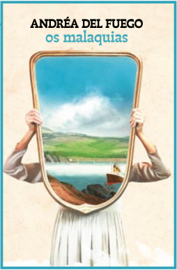

Universo do livro
Livros, séries, filmes que orbitam o livro
-
1 Os Malaquias
remete a paisagens de Minas Gerais, assim como os poemas de
Carlos Drummond de Andrade
-
2
criador de uma obra marcada pela experimentação e ruptura com a tradição, que caracterizou o modernismo brasileiro, assim como o contista
Murilo Rubião
-
3
conhecido por explorar elementos fantásticos em suas histórias, também presentes no livro
Terra Sonânbula, de Mia Couto
-
4
que tem personagem que precisam lidar cedo demais com o desamparo, como o filme
Central do Brasil
-
5
que percorre cenários rurais do nordeste brasilleiro, como a série
Entre Irmãs
-
6
em que as protagonistas, conectadas pela força do vínculo fraterno, são obrigadas a se separar, como no livro
Os Malaquias
